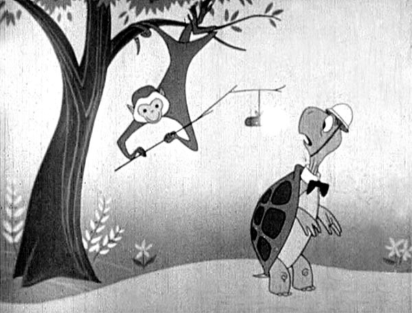
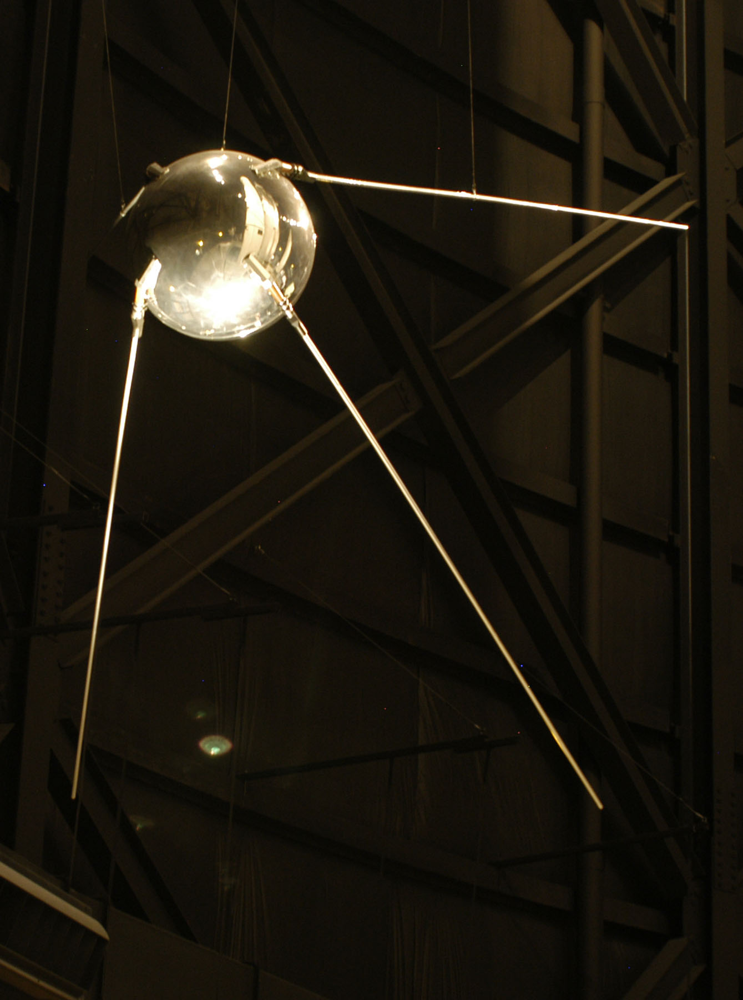
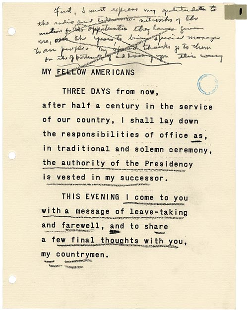

Name ______________________Date ______________Period __________
The Brink File: Brinkmanship and the Nuclear Shadow
Directions: Work through the six stations in order. Each station holds one record of the rivalry between 1951 and 1961. For each station, state what new power or fear it added to the rivalry and what it cost or risked. At the end, judge which station changed the contest most.
Part 1: Six Stations
Station 1: The Hydrogen Bomb Test Record, 1952 to 1954
Source: Summary prepared for this lesson from the standard test record. This station is a labeled summary, not a transcription of a wartime document. Yields are the standard estimates and are labeled as estimates. Photograph by the United States Department of Energy, National Nuclear Security Administration.
The mushroom cloud of Ivy Mike, the first test of a thermonuclear weapon, October 31, 1952. United States Department of Energy photograph.
Date
Record
November 1, 1952 (local date)
Ivy Mike, first American hydrogen bomb test at Enewetak Atoll; estimated yield 10.4 megatons; the island of Elugelab is erased
August 1953
The Soviet Union tests a thermonuclear weapon of its own
March 1, 1954
Castle Bravo at Bikini Atoll; estimated yield 15 megatons, far more than predicted; fallout spreads beyond the test area
The bombs of 1945 were measured in kilotons, in thousands of tons of TNT. These weapons were measured in megatons, in millions of tons. The photograph shows the cloud of the first of them, rising over an atoll in the Pacific.
State what new power this record added to the rivalry. Use the two American yields and the Soviet date.
State what it cost or risked. Your answer must use the Castle Bravo record, including that its yield ran far beyond prediction.
Station 2: Dulles and Massive Retaliation, January 12, 1954
Source: John Foster Dulles, Secretary of State, address on the evolution of foreign policy to the Council on Foreign Relations, New York, January 12, 1954, a public document of the Department of State, as reproduced by Air and Space Forces Magazine. The passage is quoted with cuts, marked by ellipses.
"Local defenses must be reinforced by the further deterrent of massive retaliatory power. A potential aggressor must know that he cannot always prescribe battle conditions that suit him. ... The way to deter aggression is for the free community to be willing and able to respond vigorously at places and with means of its own choosing. ... The basic decision was to depend primarily upon a great capacity to retaliate, instantly, by means and at places of our choosing."
Dulles also said the free nations needed a maximum deterrent at a bearable cost, and that depending on local defensive power everywhere would exhaust the country. The retaliatory power he described was nuclear, though the address does not name the weapons.
State what new power or promise this address added to the rivalry, in Dulles's own phrases.
State what it cost or risked. Explain why a threat held at the edge of war depends on the other side believing it, and what happens if a confrontation goes over the edge.
Station 3: Duck and Cover, the Home Front Record, 1951
Source: Federal Civil Defense Administration, Duck and Cover, 1951, film narration as transcribed on Wikisource from the Library of Congress National Screening Room copy, audited record in the Primary Source Project bank. The narration is quoted with cuts, marked by ellipses. Still from the film.

A frame from Duck and Cover, the Federal Civil Defense Administration film of 1951. United States government film.
"there's a bright flash, brighter than the Sun, brighter than anything you've ever seen! ... First, you duck, and then, you cover. And very tightly, you cover the back of your neck and your face. Duck and cover underneath a table or desk or anything else close by. ... sometimes the bomb might explode without any warning! Then the first thing we would know about it would be the flash and that means duck and cover fast, wherever you are!"
The film was made for schoolchildren and runs about nine minutes. An animated turtle named Bert demonstrates the routine, and a song repeats it.
State what fear this record added to American life, and name the audience the government chose to teach.
State what it cost or risked. Weigh the routine against the weapons at Station 1, and say what a desk can and cannot protect against.
Station 4: Covert Action, Iran 1953 and Guatemala 1954
Source: Summary prepared for this lesson from the standard historical record. This station is a labeled summary, not a transcription of a government document.
Date
Record
August 1953
The CIA helps overthrow Mohammad Mossadegh, Iran's elected prime minister, after he nationalizes the British controlled oil industry; the Shah returns to power
June 1954
A CIA backed force overthrows Jacobo Arbenz, Guatemala's elected president, after his land reform takes land from the United Fruit Company
1979
The Shah falls to revolution in Iran; Guatemala has entered decades of civil war and military rule
Covert action was the weapon used where nuclear threats were too dangerous and open war too costly. Both operations were secret at the time, fast, and counted as victories in Washington when they happened.
State what new power this record added to the rivalry. Name the instrument and what made it attractive beside open war.
State what it cost. Use the 1979 line of the record and the Guatemalan record together.
Station 5: Sputnik, October 4, 1957
Source: Summary prepared for this lesson from the standard record. This station is a labeled summary, not a transcription of a 1957 news report. Photograph by the United States Air Force, National Museum of the United States Air Force exhibit.

Sputnik 1 exhibit in the Missile and Space Gallery at the National Museum of the United States Air Force. United States Air Force photograph.
Fact
Record
Launch
October 4, 1957, by the Soviet Union; the first artificial satellite
The satellite
A polished sphere about 58 centimeters across, weighing about 83.6 kilograms, sending radio beeps heard around the world
The American answer
The National Aeronautics and Space Administration created in 1958, new money for science education, and a missile program pressed forward at speed
The satellite carried no weapon. Its rocket was of the kind that could carry a nuclear warhead across an ocean, and its beeping announced that Soviet science had reached orbit first.
State what new power or fear this record added to the rivalry. Separate what the satellite itself did from what its rocket proved.
State what it cost or risked, using the American answer in the record.
Station 6: Eisenhower's Farewell, January 17, 1961
Source: Dwight D. Eisenhower, Farewell Address, January 17, 1961, Miller Center transcript, audited record in the Primary Source Project bank. The address is quoted with cuts, marked by ellipses. Photograph from the Eisenhower Library, National Archives.

President Dwight D. Eisenhower delivering his farewell address, January 17, 1961. Eisenhower Library, National Archives.
"Until the latest of our world conflicts, the United States had no armaments industry. ... We have been compelled to create a permanent armaments industry of vast proportions. ... In the councils of government, we must guard against the acquisition of unwarranted influence, whether sought or unsought, by the military-industrial complex. The potential for the disastrous rise of misplaced power exists and will persist."
Eisenhower had commanded the Allied armies in Europe in the Second World War and had presided over the hydrogen bomb buildup, massive retaliation, and the covert operations in the earlier stations of this file.
State what this record added to the rivalry's record. Name the new thing Eisenhower said the United States had built, in his phrases.
State what he warned it could cost, and explain why the warning carried weight from this speaker.
Part 2: The Verdict
Six records stand in the file: the hydrogen bomb tests, the massive retaliation address, the home front film, the covert operations, Sputnik, and the farewell warning. Choose the one station you would defend as the record that changed the contest most. A strong verdict shows what the rivalry was before that record and what it was after it, and it answers the strongest claim of a rival station.
Write your verdict in a paragraph. Name your station, give the power or fear it added and its cost from its station, state the strongest fact for a rival station, and answer it.
Teacher Answer Key
Station 1: The Hydrogen Bomb Test Record
New power. Thermonuclear weapons raised the scale of destruction from kilotons to megatons. Ivy Mike released an estimated 10.4 megatons in 1952, the Soviet Union tested a thermonuclear weapon in August 1953, and Castle Bravo released an estimated 15 megatons in March 1954. Both sides could now destroy the other's society, and yields must be stated as estimates.
Cost or risk. Castle Bravo ran far beyond its predicted yield and spread fallout beyond the test area, showing that the new weapons could escape the control of the people who built and tested them.
Station 2: Dulles and Massive Retaliation
New power or promise. The United States promised to reinforce local defenses with massive retaliatory power, responding vigorously at places and with means of its own choosing, depending primarily on a great capacity to retaliate, instantly. The promise was nuclear in substance and was offered as a maximum deterrent at a bearable cost.
Cost or risk. The threat works only if the other side believes it might be carried out. Brinkmanship therefore requires walking to the edge of war, and a confrontation at the edge can go over it by error, misreading, or pride, with the megaton weapons of Station 1 as the result.
Station 3: Duck and Cover
Fear added. The fear of atomic attack was carried into the schoolroom and taught as a routine to children, the audience the Federal Civil Defense Administration chose for its 1951 film. Duck and cover made nuclear war a normal school subject alongside fire drills.
Cost or risk. A desk and covered neck protect against flying glass and debris at a distance from a blast. Against the megaton weapons of Station 1 near a city, the routine could not deliver the safety its song and turtle implied, and the gap between the drill and the weapon is the station's central fact.
Station 4: Covert Action
New power. Covert action gave the United States a secret instrument, run chiefly by the CIA, for removing governments without open war or nuclear threats. It was fast and cheap beside a war, which was its attraction.
Cost. Iran's elected prime minister was overthrown in 1953 and the Shah restored; the Shah fell to revolution in 1979. Guatemala's elected president was overthrown in 1954, and the country entered decades of civil war and military rule. The sponsor's hand was hidden in the moment and the consequences were not.
Station 5: Sputnik
New power or fear. The satellite itself carried no weapon and only beeped. Its rocket proved that the Soviet Union could deliver power across an ocean and had reached orbit first, which Americans heard as proof their country had fallen behind in science and missiles.
Cost or risk. The shock drove the American answer in the record, a new space agency in 1958, new money for science education, and a missile program pressed forward at speed, widening the competition into space and the schools.
Station 6: Eisenhower's Farewell
Added to the record. Eisenhower named a permanent armaments industry of vast proportions, joined to an immense military establishment, as a new and lasting feature of American life, felt in every city and office of government.
Cost warned of, and the speaker's weight. He warned against the acquisition of unwarranted influence, whether sought or unsought, by the military-industrial complex, and of the potential for the disastrous rise of misplaced power. The warning carried weight because Eisenhower had commanded the Allied armies in Europe and had presided over the buildup, the doctrine, and the covert operations in this file.
Part 2: The Verdict (Grading Guide)
Full credit verdicts name one station, support it with the power or fear it added and its cost, and answer a rival. A hydrogen bomb verdict argues that every later station runs on the megaton scale set in 1952 to 1954; it must answer Sputnik, which changed what Americans feared without adding a weapon. A massive retaliation verdict argues that the doctrine rewrote the rules of every confrontation after January 1954; it must answer the test record, which supplied the power the doctrine threatened to use. A Sputnik verdict argues that October 1957 widened the contest into space, science, and the schools at once; it must answer the covert action record, where the contest was already being fought in other countries. A covert action verdict earns full credit when it argues from the long record, 1979 and the Guatemalan civil war, rather than from the cheap victories of 1953 and 1954. A farewell verdict is full credit when it argues that Eisenhower's warning identified the domestic cost the other stations created. Verdicts that list facts without a before and after claim earn partial credit.